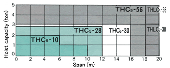
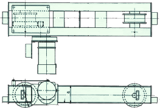
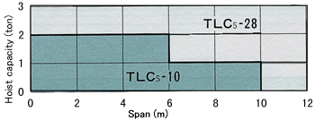
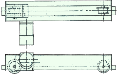
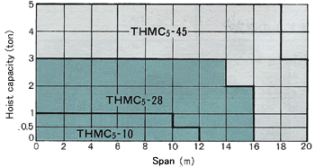
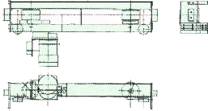
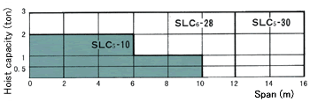
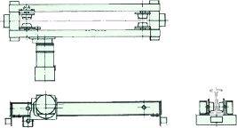

| Type | Toprun Type | |||||||
|---|---|---|---|---|---|---|---|---|
| TH Type | ||||||||
| Model | THC5-10 | THC5-28 | THC5-30 | THLC5-30 | THC5-56 | THLC5-56 | ||
| Max Wheel Load (ton) | 1 | 2.8 | 3 | 5.6 *(4) | ||||
| Max Span (m) | 10 | 12 | 16 | 20 | 18 | 20 | ||
| Traveling Speed (m/min) Standard/Creep |
50Hz | 21/5 | ||||||
| 60Hz | 25/6 | |||||||
| Motor | kW Standard/Creep | 50Hz | 0.30/0.08 × 2units | 0.70/0.18 × 2units | ||||
| 60Hz | 0.36/0.09 × 2units | 0.84/0.21 × 2units | ||||||
| No. of Poles Standard/Creep | 2/8 | |||||||
| No. of starts per hour and duty factor | 400 starts/h, 40%ED | |||||||
| Wheel Diameter. (mm) | φ125 | φ180 | φ250 | |||||
| Wheel Material | FCD heat treatment | |||||||
| Traveling Rail (kg) | 12,15 | 15,22 | 22,30 | |||||
| Approx. Weight (kg) | 80 × 2 | 120 × 2 | 185 × 2 | 200 × 2 | 260 × 2 | 320 × 2 | ||
| Saddle Selection | 
Note
|
|||||||
| Figure |  | |||||||
Note
| Type | Toprun Type | |||
|---|---|---|---|---|
| TL Type | ||||
| Model | TLC5-10 | TLC5-28 | ||
| Max Wheel Load (ton) | 1 | 2.8 | ||
| Max Span (m) | 10 | 12 | ||
| Traveling Speed (m/min) Standard/Creep |
50Hz | 21/5 | ||
| 60Hz | 25/6 | |||
| Motor | kW Standard/Creep | 50Hz | 0.30/0.08 × 2units | |
| 60Hz | 0.36/0.09 × 2units | |||
| No. of Poles Standard/Creep | 2/8 | |||
| No. of starts per hour and duty factor | 400 starts/h, 40%ED | |||
| Wheel Diameter. (mm) | φ125 | φ180 | ||
| Wheel Material | FCD | |||
| Traveling Rail (kg) | 15 | 22 | ||
| Approx. Weight (kg) | 65 × 2 | 100 × 2 | ||
| Saddle Selection | 
Note
|
|||
| Figure |  | |||
Note
| Type | Toprun Type | ||||
|---|---|---|---|---|---|
| THM Type (Trackless) Refer to (Note 4) | |||||
| Model | THMC5-10 | THMC5-28 | THMC5-45 | ||
| Max Wheel Load (ton) | 1 | 2.8 | 2 : 4.5(4) | ||
| Max Span (m) | 10 | 14 | 18 | ||
| Traveling Speed (m/min) Standard/Creep |
50Hz | 21/5 | |||
| 60Hz | 25/6 | ||||
| Motor | kW Standard/Creep | 50Hz | 0.30/0.08 × 2units | 0.70/0.18 × 2units | |
| 60Hz | 0.36/0.09 × 2units | 0.84/0.21 × 2units | |||
| No. of Poles Standard/Creep | 2/8 | ||||
| No. of starts per hour and duty factor | 400 starts/h, 40%ED | ||||
| Wheel Diameter. (mm) | φ165 | φ310 | |||
| Wheel Material | Polyurethane rubber | ||||
| Traveling Rail | H-beam width (mm) 150, 175, 200 | ||||
| Approx. Weight (kg) | 105 × 2 | 180 × 2 | 405 × 2 | ||
| Saddle Selection | 
Note
|
||||
| Figure |  | ||||
Note
| Type | Suspension Type SL Type | ||||
|---|---|---|---|---|---|
| Model | SLC5-10 | SLC5-28 | SLC5-30 | ||
| Max Wheel Load (ton) | 1 | 2.8 | 3 | ||
| Max Span (m) | 10 | 12 | 16 | ||
| Traveling Speed (m/min) Standard/Creep |
50Hz | 21/5 | |||
| 60Hz | 25/6 | ||||
| Motor | kW Standard/Creep | 50Hz | 0.30/0.08 × 2units | ||
| 60Hz | 0.36/0.09 × 2units | ||||
| No. of Poles Standard/Creep | 2/8 | ||||
| No. of starts per hour and duty factor | 400 starts/h, 40%ED | ||||
| Wheel Diameter. (mm) | φ76 | φ100 | |||
| Wheel Material | S45C heat treatment | ||||
| Applicable I-beam (mm) | 200 × 100 × 7 250 × 125 × 7.5 300 × 150 × 11.5 |
200 × 100 × 7 250 × 125 × 7.5 300 × 150 × 11.5 450 × 175 × 11 |
|||
| Approx. Weight (kg) | 80 × 2 | 115 × 2 | 150 × 2 | ||
| Saddle Selection | Hitachi suspension type crane saddle is produced on the premise of I-beam is used as girder.  Note
|
||||
| Figure |  | ||||
Note